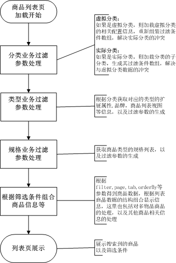

/**
*
* @param int $cat_id 商品分类ID
* @param string $urlFilter 品牌，规格等过滤参数
* @param int $orderBy 排序array(
1=>array('label'=>app::get('b2c')->_('默认')),
2=>array('label'=>app::get('b2c')->_('按发布时间 新->旧'),'sql'=>'last_modify desc'),
3=>array('label'=>app::get('b2c')->_('按发布时间 旧->新'),'sql'=>'last_modify'),
4=> array('label'=>app::get('b2c')->_('按价格 从高到低'),'sql'=>'price desc'),
5=>array('label'=>app::get('b2c')->_('按价格 从低到高'),'sql'=>'price'),
6=>array('label'=>app::get('b2c')->_('访问周次数'),'sql'=>'view_w_count desc'),
7=> array('label'=>app::get('b2c')->_('总访问次数'),'sql'=>'view_count desc'),
8=>array('label'=>app::get('b2c')->_('周购买次数'),'sql'=>'buy_count desc'),
9=> array('label'=>app::get('b2c')->_('总购买次数'),'sql'=>'buy_w_count desc'),
10=> array('label'=>app::get('b2c')->_('评论次数'),'sql'=>'comments_count desc'),
);
* @param unknown_type $tab 参数分隔符
* @param int $page 页数
* @param int $cat_type 虚拟分类时使用，虚拟分类id，与分类$cat_id互斥的
* @param string $view 商品列表页展示方式，index,text,grid三种显示方式
*/
public function index($cat_id='',$urlFilter=null,$orderBy=0,$tab=null,$page=1,$cat_type=null,$view=null) {}
注：http://localhost/ecos/index.php/gallery-12-b,2_1,59-1--1--grid.html?scontent=b,2_1,59_)
1.$urlFilter=htmlspecialchars(urldecode($urlFilter));
$_GET['scontent'] = htmlspecialchars($_GET['scontent']);
if(!empty($urlFilter) && $urlFilter != $_GET['scontent']){
$urlFilter .= '_'.$_GET['scontent'];
}else{
$urlFilter = $_GET['scontent'];
}
if( $cat_type ){
$vcatid = $cat_type;
$oVcat = $this->app->model('goods_virtual_cat');
$oSearch = &$this->app->model('search');
$vcat = $oVcat->getList('cat_id,cat_path,virtual_cat_id,filter,virtual_cat_name as cat_name',array('virtual_cat_id'=>intval($vcatid)));
$vcat = current( $vcat );
$vcatFilters=$oVcat->_mkFilter($vcat['filter']);
$vcatFilters=$oVcat->getFilter($vcatFilters);
$old_cat_id = $cat_id;
$old_urlFilter = $urlFilter;
$cat_id = $cat_id?$cat_id.implode(",",$vcatFilters['cat_id']):implode(",",$vcatFilters['cat_id']);
$urlFilter = $urlFilter?$urlFilter:$oSearch->encode($vcatFilters);
}
过滤生成参数，将参数加入filter
2.品牌参数的筛选
$propargs = $searchtools->decode($urlFilter,$path,$cat);
if(is_array($propargs)){
foreach($propargs as $rk=>$rv){
$pos = strpos($rk,'p_');
if($pos === 0){
$propz[$rk] = $rv[0];
$rk =substr($rk,2);
$proparg[$rk] = $rv;
$prot[] = $rk;
}
}
}
if(isset($propargs['name'])){
$GLOBALS['runtime']['search_key'] = $propargs['name'][0];
}
$this->pagedata['prot'] = $prot;
$filter = $propargs;
if(is_array($filter)){
$filter=array_merge(array('cat_id'=>$cat_id,'marketable'=>'true'),$filter);
if( ($filter['cat_id'][0] === '' || $filter['cat_id'][0] === null ) && !isset( $filter['cat_id'][1] ) )
unset($filter['cat_id']);
if( ($filter['brand_id'][0] ==='' || $filter['brand_id'][0] === null) && !isset( $filter['brand_id'][1] ))
unset($filter['brand_id']);
}else{
$filter = array('cat_id'=>$cat_id,'marketable'=>'true');
}
3.获取类型关联的规格
$type_id = $type_filter['type_id'];
$gType = &$this->app->model('goods_type');
$SpecList = $gType->getSpec($type_id,1);//获取关联的规格
$oGoodsTypeSpec = $this->app->model('goods_type_spec');
$type_spec = $oGoodsTypeSpec->get_type_spec($type_id);
$oSpecification = &$this->app->model('specification');
$filter['cat_id'] = $cat_id;
$filter['goods_type'] = 'normal';
$filter['marketable'] = 'true';
//-----查找当前类别子类别的关联类型ID
if ($urlFilter){
if($vcat['type_id']){
//$filter['type_id']=$vcat['type_id'];
$filter['type_id']=null;
}
}
4.商品搜索-品牌，分类（虚拟分类），标签等搜索的筛选
if ($SpecList){
if ($curSpec)
$curSpecKey=array_keys($curSpec);
foreach($SpecList as $spk => $spv){
$selected=0;
if ($curSpecKey&&in_array($spk,$curSpecKey)){
$spv['spec_value'][$curSpec[$spk]]['selected']=true;
$selected=1;
}
if ($spv['spec_style']=="select"){ //下拉
$SpecSelList[$spk] = $spv;
if ($selected)
$SpecSelList[$spk]['selected'] = true;
}
elseif ($spv['spec_style']=="flat"){
$SpecFlatList[$spk] = $spv;
if ($selected)
$SpecFlatList[$spk]['selected'] = true;
}
}
}
$this->pagedata['SpecFlatList'] = $SpecFlatList;
$this->pagedata['specimagewidth'] = $this->app->getConf('spec.image.width');
$this->pagedata['specimageheight'] = $this->app->getConf('spec.image.height');
$this->pagedata['orderBy'] = $objGoods->orderBy();//排序方式
if(empty($orderBy)) $orderBy = 1;
if(!isset($this->pagedata['orderBy'][$orderBy])){
$this->_response->set_http_response_code(404);
}else{
$orderby = $this->pagedata['orderBy'][$orderBy]['sql'];
}
$selector['ordernum'] = $cat['ordernum'];
if(app::get('base')->getConf('server.search_server.search_goods')){
$searchApp = search_core::instance('search_goods');
$sfilter['filter'] = $filter;
$sfilter['from'] = $pageLimit*($page-1); //分页
$sfilter['to'] = $pageLimit;
$sfilter['order'] = $orderby;
$sfilter['scount'] = count($cat['props']);
}
$res = false; //初始化
if(is_object($searchApp)){
$sphinxstart = true;
$queryRes = $searchApp->query($sfilter);
if($queryRes){
$res = $searchApp->commit();
$nprop = $res['prop']; //属性搜索
$cbrand = $res['brand'];
$rfilter['goods_id'] = $res['result'];
if(is_array($res['result'])){
$count = $res['total'];
$search_data = $objGoods->getList('*', $rfilter);
foreach($search_data AS $tmp_data){
$tmp_search_data[$tmp_data['goods_id']] = $tmp_data;
}
foreach($res['result'] as $v){
if(!isset($tmp_search_data[$v])) continue;
$aProduct[] = $tmp_search_data[$v]; //产品
}
unset($search_data);
unset($tmp_search_data);
}else{
$count = 0;
$aProduct = array();
}
}
}
if($res === false){
if (isset($filter['tag'][0])&&!$filter['tag'][0]） unset($filter['tag']);
$aProduct = $objGoods->getList('*',$filter,$pageLimit*($page-1),$pageLimit,$orderby);
$count = $objGoods->count($filter);
}
5.展示页面
$this->page('site/gallery/index.html');